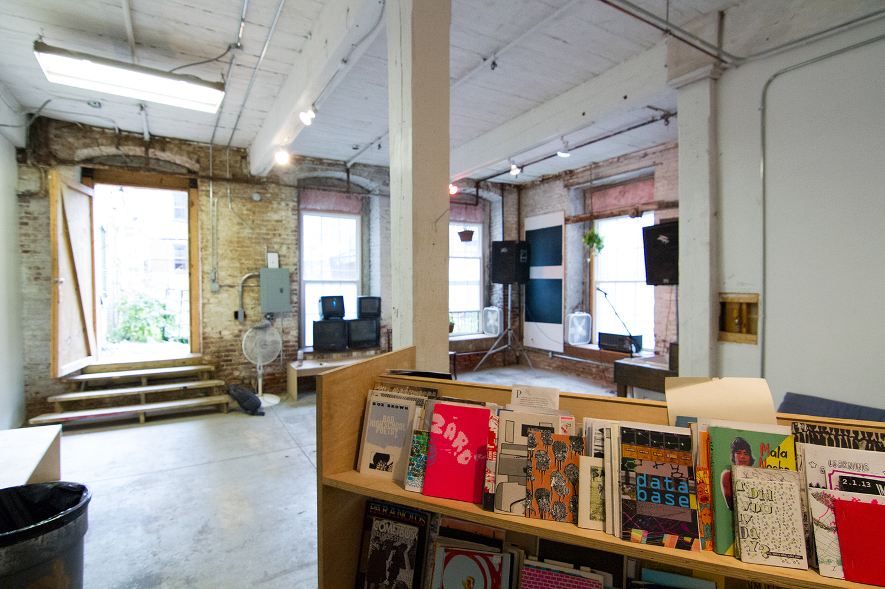

Little Berlin's Zine Library began in 2009, including artist books, photography, comis, self-published literature, poetry and printed emphemera. As the collection grew, it gained national recogntion, making it's way onto directories and publications. Because of this notoriety, Little Berlin regulary accepted donations and received zines in the mail, making the library a go to for visitors.
In 2015, Little Berlin audited its collection and found more than 600 unique zines. The collection continued to grow from that point
Upon the dissolution of Little Berlin and exodus from its space in March 2020, the Zine Library was moved to temporary storage until a new home can be found.
-

- https://zines.barnard.edu/zine-libraries
- https://www.34st.com/article/2017/12/self-care-at-the-annex-little-berlin
- http://worldcat.org/identities/nc-little%20berlin%20zine%20library/
- https://www.zinelibraries.info/directory/
- https://temple-news.com/collection-zines-archived-paley/
- https://libguides.coa.edu/c.php?g=765414&p=5492937
- https://artistrunalliance.org/initiatives/little-berlin/